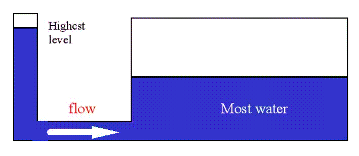

| Feature Article - October 2002 |
| by Do-While Jones |
We won't insult your intelligence (or risk a copyright infringement lawsuit) by titling this essay, "Thermodynamics for Dummies"; but we will try to give you a good overview of the principal concepts of thermodynamics in an entertaining style written for junior high school readers.
We have criticized evolutionists for their lack of understanding of basic thermodynamic principles, and we have criticized creationists for their inadequate explanation of why thermodynamic considerations rule out any possibility of evolution. Now it is time for us to attempt to do what others have failed to do.
This is no easy task. In engineering colleges, thermodynamics often turns out to be one of two "weed-out courses" that causes students to change majors. (The other is fluid mechanics.) But, we think we are up to the challenge. We think we can make thermodynamics both interesting and understandable.
We hope to succeed by not making the same mistakes made by most evolutionists, creationists, and thermodynamics professors.
Evolutionists generally fail because they apparently don't have the slightest idea what they are talking about. Therefore, they make silly arguments about snowflakes and open systems.
Creationists generally fail because they jump right to the punch line without telling the joke. They expect people to understand their argument without laying the proper groundwork.
Thermodynamics professors generally fail because other professors haven't laid the proper groundwork. Thermodynamic concepts aren't difficult to grasp, but the math involved is really nasty. Students generally fail thermodynamics, not because they don't understand thermodynamics, but because they can't do the math. (The same thing is true of fluid mechanics. The calculus required to solve problems is difficult.) Engineering students need to learn the math, but you don't. So, we will skip the math and just talk about the concepts.
The mistake we are likely to make is giving you too much information too quickly. So, we are going to make every effort to slow down and take it easy. That means that this essay will have to be the first in a series.
Everything happens because heat is flowing from a hot place to a cold place. Nothing happens without heat flow. There are no exceptions. That's why thermodynamics, which is generally a mechanical engineering course, is usually required for graduation with a mechanical, electrical, civil, or chemical engineering degree.
Furthermore, thermodynamics is an exact science. If one can do the math, it is possible to calculate the maximum amount of work that can be done, or the actual efficiency of any machine, entirely from an analysis of temperature differences and heat flow. So, if a machine needs to do more work than can be done by the heat flow associated with it, that machine cannot possibly be built.
Thermodynamics is, from an engineer's point of view, the ultimate science. It explains the operation of the entire natural universe. That is what makes the study of thermodynamics so interesting, exciting, and relevant. So, with that introduction, let's start to investigate thermodynamics.
It is natural to confuse heat with temperature. That's because the more you heat something, the higher its temperature becomes. But heat and temperature aren't the same things. Heat is a form of energy. A difference in temperature causes heat to flow. Just remember, heat is something that flows and temperature is what makes heat flow.
You can melt more ice with 1,000 gallons of 90 degree (F) water than 1 teaspoon of 200 degree (F) water. That is because there is more heat in 1,000 gallons of 90 degree water than there is in 1 teaspoon of 200 degree water. Just because the teaspoon is hotter, it doesn't mean that it contains more heat than all those gallons of cooler water.
Water is a little bit easier to visualize than heat, so let us explain heat flow using a water flow analogy. Suppose you have two cylinders of water connected by a pipe at their base, as shown (viewed from the side) below.
|
 |
|---|
The cylinder on the left has the highest water level. The cylinder on the right has the most water. In this diagram, water level represents temperature. The amount of water represents the amount of heat.
Water will flow from the cylinder on the left into the cylinder on the right because there is a difference in water levels. It doesn't matter that there already is more water in the cylinder on the right. Water will flow until the levels are equal. It doesn't flow until the amounts of water in each cylinder are equal. Heat, like water, flows in such a way to produce a uniform temperature level.
There are four laws of thermodynamics which build upon each other. They are numbered 0 through 3 because the most fundamental law was discovered after the First Law had already been given the number 1. Therefore, they had to assign the most fundamental law the number 0.
The Zeroth Law simply says there is no heat flow between objects that are the same temperature. In essence, the Zeroth Law is just a definition of what temperature is.
That is what makes a thermometer useful. Suppose you stick a room-temperature thermometer into boiling water. Heat flows from the boiling water into the thermometer until they are the same temperature. When they are both the same temperature, heat stops flowing between them, so the temperature of the thermometer stops rising. The thermometer shows its own temperature, which is the same as the water temperature.
The First Law is that heat cannot be created or destroyed. (This is also known as the law of conservation of energy.) Heat can only flow from place to place, or change form.
Heat usually manifests itself as the kinetic energy of the molecules of a gas, liquid, or solid. That is a rather limited view of what heat really is. Heat is work waiting to happen. Work will be done (or wasted) when heat flows from a hot place to a cold place. So, heat is really work-in-waiting.
Consider an unlit candle at room temperature. There is some chemical energy in the wax of the candle. But there is no heat flow from an unlit candle, so it can't do any work.
A burning candle does not create heat because heat cannot be created or destroyed. A burning candle liberates heat. Heat that already was in the candle (in the form of chemical energy) flows out. The melted wax is hot because heat has changed to a form that can escape. Heat flows from the flame and hot wax into the cooler atmosphere, and could do some useful work. A (small) pot of water could be suspended over the flame, and the heat flowing into the water could boil it, creating steam which could turn a tiny steam engine, which could do a little bit of work.
But even if the candle doesn't boil any water, heat is not destroyed. Heat has merely moved from a hot place to a cold place, making the hot place cooler and the cold place warmer, wasting the opportunity to do some work. When both places are the same temperature there will still be the same amount of heat as there was before the candle was lit. The only difference is that the heat is less well organized than it was. Previously the heat was concentrated in the candle. After the candle burns out, and everything reaches the same temperature, the heat is more uniformly distributed. It is more disorganized because it isn't localized in one place.
"Entropy" is a quantifiable measure of how evenly distributed heat is. The actual calculation of entropy involves some partial differential equations which can be simplified somewhat by keeping temperature or pressure constant, and can be calculated by someone sufficiently skilled in mathematics. The results of countless calculations have shown that every time heat flows from a hot spot to a cold spot, entropy increases. Every time heat flows from a cold spot to a hot spot, entropy decreases.
The Second Law says that entropy always increases in a closed system. (A closed system is one that does not exchange any energy with the surrounding environment. The universe is a closed system because there is nothing outside of it to exchange heat with.)
Entropy can decrease in an open system only if energy is received from an outside source. Whenever energy is received by an open system, the sum of the entropy of the open system plus the entropy of the outside source increases.
Engineering students spend a lot of time calculating the change in entropy. One of the things engineers generally do is to define the boundaries of a system such that it is closed. That is, they combine the open system and the outside source of energy into a larger, closed, system (which does not exchange heat with its environment). Then, when computing the sum of all the changes in entropy of each part of the combined system, the total entropy has to increase. If it doesn't, the student made a mistake.
The entropy of a closed system always increases if work is done (or if work is wasted). The only way the change in entropy can remain the same is if a "reversible" process occurs. For a process to be reversible, energy has to be transferred without any loss. In real life there are some nearly reversible processes; but the Third Law (which we will see in a moment) says that there are no truly reversible processes.
We have taken five paragraphs to explain the Second Law. Here is how one physics textbook tried to express it in one sentence.
|
A natural process that starts in one equilibrium state and ends in another will go in the direction that causes the entropy of the system plus environment to increase. 1 |
A famous poet once wrote, "Something there is that doesn't love a wall." 2 If he had been an engineer instead of a poet, he would have known that the "something" that hates walls is the Second Law of Thermodynamics. There is a natural direction for walls. The natural direction is to fall apart. Walls don't naturally fall together.
The Third Law says that an ideal engine would convert 100% of the heat into useful work only if its exhaust temperature were absolute zero. In other words, 100% efficiency is impossible.
Since 100% efficiency is impossible, it means that there are no truly reversible processes. That, in turn, means that all processes are irreversible. That means, all processes have a natural direction which causes entropy to increase.
Thirty-some years ago, when I was in college, I heard someone explain the first three laws of thermodynamics rather cynically this way:
That formulation is a step toward relating the laws of thermodynamics to everyday life. We are going to take more steps in that direction in the following months. Some of those steps will have obvious application to the theory of evolution.
This month we will be satisfied if we have established these few facts:
Next month we will start to apply those facts to the real world.
| Quick links to | |
|---|---|
| Science Against Evolution Home Page |
Back issues of Disclosure (our newsletter) |
| Web Site of the Month |
Topical Index |
Footnotes:
1
Resnick & Halliday, Physics Part 1, John Wiley & Sons, Inc. 1960, page 638.
2
Robert Frost, "Mending Wall"